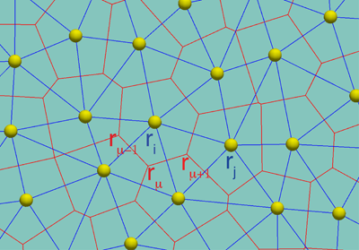
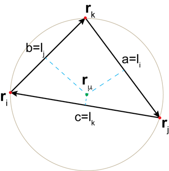
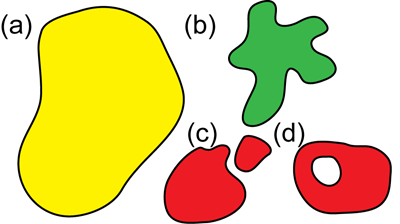
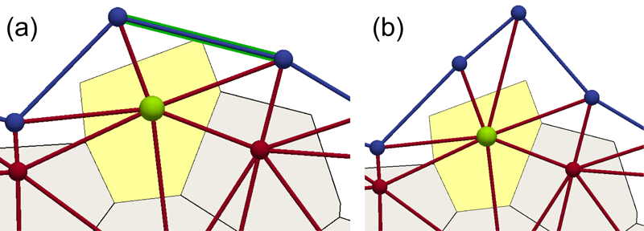
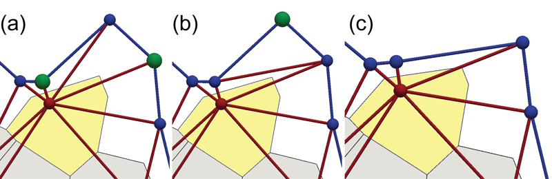

SAMoS implements an extended version of the recently introduced Self-propelled Voronoi model (SPV) by Bi, et al.. Current implementation allows for open (fixed and dynamic) boundaries, multiple cell types, as well as cell division and death. Due to these differences, we refer to the tissue model implemented in SAMoS as Active Vertex Model (AVM).
The main idea behind the AVM model is that one makes a mapping between the Vertex model widely used for describing tissues and the particle based model for active matter. This allows to perform large-scale simulations of tissues and include a wide variety of local cellular movement in a natural fashion. The basic unit in our model is a particle, whose position can be thought as approximately corresponding to the centre of mass of the cell. Tissue is represented as a Voronoi tesselalation of the plane. Therefore, in this approach, epithelial cells are interpreted as Voronoi cells corresponding to the cell centres, i.e., particle positions.
In the vertex model, energy is defined on vertices and edges. It is therefore necessary to make connection between the cell-centre based description of the SPV model and the quantities defined on the vertices of the Voronoi diagram.
In the vertex model energy of the tessellation is defined as \begin{equation} E_{vertex}=\sum_{i=1}^{N_{face}}\left[\frac{K_{i}}{2}\left(A_{i}-A_{i}^{0}\right)^{2}+\frac{\Gamma_{i}}{2}P_{i}^{2}\right]+\sum_{\mu,\nu}\Lambda_{\mu\nu}l_{\mu\nu}, \label{eq:vertex_model_energy} \end{equation} where the first sum goes over all faces (cells), $K_{i}$ is the cell stiffness, measuring resistance to change the cell area $A_{i}$ from its native area $A_{i}^{0}$. $\Gamma_{i}$ measures the resistance to changing the cell perimeter, $P_{i}$. $l_{\mu\nu}$ is the length of the edge connecting vertices $\mu$ and $\nu$ (on the Voronoi mesh) and $\Lambda_{\mu\nu}$ is the resistance of changing the contact length between two neighbouring cells, i.e., the tension of the cell junctions.

Fig. 1: Two coordinate representations. In our model we track particles that correspond to cell centres (yellow spheres). Particle positions are denoted using latin indices. Particles form a Delaunay triangulation (blue lines). Dual of this triangulations is a Voronoi diagram, with each Voroni cell representing actual cell. Cell edges are marked with red lines. Vertices of the dual mesh are denoted by Greek indices.
In Figure 1 we show two representations used in this model. We are going to adhere to a convention that Latin indices denote particle positions and Greek indices label vertices of the Voronoi network. In this description, area corresponding to the particle i is nothing but the area of the polygon (face) on of the vertex mesh surrounding site i and is given as, \begin{equation} A_{i}=\frac{1}{2}\sum_{\mu}\left(\vec{r}_{\mu}\times\vec{r}_{\mu+1}\right)\cdot\vec{N}_{i}, \end{equation} where $\vec{r}_{\mu}$ is the position of vertex $\mu$ and $\vec{N}_{i}$ is a unit-length vector perpendicular to the surface the polygon and it does not depend on the position of vertices. This is expression is just a discrete version of the Green's formula. We will assume that the triangulation is Delaunay and vectors $\vec{r}_{\mu}$ correspond to the vertices of the dual Voronoi lattice.

Fig. 2: Definition of the circumcenter of a non-obtuse triangle.
For a given Delaunay triangle, the position of the Voronoi centre is given as (see Fig. 2) \begin{equation} \vec{r}_{\mu}=\frac{\lambda_{1}}{\lambda_{1}+\lambda_{2}+\lambda_{3}}\vec{r}_{i}+\frac{\lambda_{2}}{\lambda_{1}+\lambda_{2}+\lambda_{3}}\vec{r}_{j}+\frac{\lambda_{3}}{\lambda_{1}+\lambda_{2}+\lambda_{3}}\vec{r}_{k}, \label{eq:r_mu_baricentric} \end{equation} where we use the notation \begin{eqnarray} \lambda_{1} &=&l_{i}^{2}\left(l_{j}^{2}+k_{k}^{2}-l_{i}^{2}\right) \\ \lambda_{2} &=&l_{j}^{2}\left(l_{k}^{2}+l_{i}^{2}-l_{j}^{2}\right) \\ \lambda_{3} &=&l_{k}^{2}\left(l_{i}^{2}+l_{j}^{2}-l_{k}^{2}\right), \end{eqnarray} where \begin{eqnarray} l_{i} &=&\left|\vec{r}_{j}-\vec{r}_{k}\right|=\left|\vec{r}_{jk}\right| \\ l_{j} &=&\left|\vec{r}_{k}-\vec{r}_{i}\right|=\left|\vec{r}_{ki}\right| \\ l_{k} &=&\left|\vec{r}_{i}-\vec{r}_{j}\right|=\left|\vec{r}_{ij}\right|. \end{eqnarray}
In order to implement the AVM into a particle based code such as SAMoS, we have to compute forces acting on each particle (cell-centre in this case). This is done directly by computing the negative derivative of the energy functional in Eq. (\ref{eq:vertex_model_energy}). The only real complication is that the energy is most naturally written in terms of positions of the Voronoi vertices, while the basic degrees of freedom in AVM are the cell-centres. Therefore, we need to apply the chain rule in order to extract forces on a particle. In general, \begin{equation} \vec{F}_{i}=-\nabla_{\vec{r}_{i}}E_{vertex}.\label{eq:general_force-1} \end{equation} Another complication we need to worry about is that moving particle $i$ will change area of its neighbouring cells and thus exert force on a number of other particles in its surrounding. All those contributions have to be taking into account when computing the force. A direct consequence of this is that the forces on cell centres cannot be written as simple pairwise interactions. However, they still remain local and only nearest neighbours contribute to the total force.
After a lengthy, but straightforward calculation we derive to the final expression for the force on particle (cell) $i$, \begin{eqnarray} \vec{F}_{i} & = & \vec{F}_{i}^{a}+\vec{F}_{i}^{p}+\vec{F}_{i}^{j}\nonumber \\ & = & -\sum_{k=1}^{N_{part}}\frac{K_{k}}{2}\left(A_{k}-A_{k}^{0}\right)\sum_{\nu\in l_{k}}\left[\vec{r}_{\nu+1,\nu-1}\times\vec{N}_{k}\right]^{T}\left[\frac{\partial\vec{r}_{\nu}}{\partial\vec{r}_{i}}\right]\label{eq:total_force}\\ & & -\sum_{k=1}^{N_{part}}\Gamma_{k}P_{k}\sum_{\nu\in l_{k}}\left(\hat{\vec{r}}_{\nu,\nu-1}-\hat{\vec{r}}_{\nu+1,\nu}\right)^{T}\left[\frac{\partial\vec{r}_{\nu}}{\partial\vec{r}_{i}}\right]\\ & & -\sum_{k=1}^{N_{part}}\sum_{\nu\in l_{k}}\left[\Lambda_{\nu-1,\nu}\hat{\vec{r}}_{\nu,\nu-1}-\Lambda_{\nu,\nu+1}\hat{\vec{r}}_{\nu+1,\nu}\right]^{T}\left[\frac{\partial\vec{r}_{\nu}}{\partial\vec{r}_{i}}\right]. \end{eqnarray}
In previous equation $\left[\frac{\partial\vec{r}_{\nu}}{\partial\vec{r}_{i}}\right]$ is the $3\times3$ Jacobian matrix for changing coordinates from the vertices to cell centres.
We note that the $k$ sum runs over all immediate neighbours of cell $i$, hence leading to the expression for the force that is not pair-wise. In order to see explicitly what goes into computing the force on cell $i$, we focus only of the area, $\vec F^a$, term.
We loop over all cells surrounding cell $i$.
Note that quantities such as the native area, $A_{0}$ are not easily defined for the boundary cells (particles). Therefore, it is clear that boundary particles have to be treated separately.
The most general method that would allow changes of topology of the boundary, such as parts of the tissue being allowed to detach or holes being allowed to open and close, is not an easy problem. It would require complex checks and modifications of the underlying Delaunay triangulation, which would introduce a non-negligible additional computational cost on top of already elaborate mechanisms required to maintain and dynamically update the triangulation. Therefore, in current implementation we assume that the topology (connectivity) of the boundary is maintained throughout the entire simulations. This does not mean that the boundary is fixed. It can grow, shrink and change its shape, but it cannot change its topology, e.g. it is not possible transition from a disk to an annulus. Examples of allowed and disallowed changes of the boundary are shown in Fig. 3.

Fig. 3: Schematic representation of the allowed and disallowed changes of the boundary. Initial configuration with the topology of a disk (a) is allowed to develop pronounced fingers (b). However, it is not possible to split into two domains (c) or develop a hole (d).
In the AVM the degrees of freedom are particles that represent cell centres. These particles also serve as sites of the Delaunay triangulation. In order to handle boundaries we introduced two types of particles, boundary and internal. In addition we specify the connectivity between boundary particles. Boundary particles together with their connection information form a boundary line. This line sets the topology of the boundary, which is preserved throughout the simulation, and delineates between the tissue and its surrounding. In addition, the boundary line can have free energy, such as line tension or bending stiffness, assigned to it. Biologically, this would correspond to the complex molecular For simplicity, we assume that each boundary particle has exactly two boundary neighbours. This prevents somewhat pathological, "cross-like" configurations where two otherwise disjoint domains would hinge on a single boundary site.
Boundary particles do not represent centres of actual cell. In a Delaunay triangulation, star of the boundary vertex is incomplete, which introduces a number of complications related to properly defining quantities such as the associated dual area or perimeter. These quantities can unambiguously be defined only for the internal particles, which in turn correspond to cells. Boundary particles instead can be thought of as "ghosts" that serve to model the complex processes that occur at the buffer layer between cells in the epithelial sheet and its environment. These particles, however, experience forces from the interior of the tissue as well as form the interactions with their neighbours on the boundary (such as line tension and bending rigidity). The boundary line, dynamically adjusts its shape to the cell configuration inside the tissue.
Due to the dynamic nature of the model, even without cell
We first focus on the boundary expansion. We require that that all cells are contained within the boundary, that is that no cell vertices spill over to the outside region. The spill-over happens if the angle opposite to a boundary edge is greater than $90^{\circ}$. In this case, the centre of the circumscribed circle falls outside the triangle and, therefore, outside the boundary. In order to prevent this from happening we perform following check (see Fig. 4):
Note that the procedure outlined above always converges in a single step. A boundary edge is flipped is the angle opposite to it is $90^{\circ}$. The flip creates two new triangles that are both acute at the internal vertex and therefore cannot trigger additional flips in the same step.

Fig. 4: Expansion of the boundary by adding a new boundary particle. (a) If the angle at the internal particle shaded in green opposite to the highlighted edge reaches $90^{\circ}$, one of the corners of the cell (yellow polygon) touches the highlighted edge. This triggers a "flip" mechanism. (b) The internal particle shaded in green is mirrored along the shaded edge in (a) and a new boundary particle (top blue) is introduced. The shaded edge is flipped such that the new particle is connected to the "green" one.
Shrinking of the boundary is achieved by removing particles that have no connections to the internal particles, i.e., they only have two edges connecting them to the two neighbouring boundary particles. In other words, in this situation, no part of a cell can be inside the triangle having two of its sides being boundary edges and it can be safely removed. The algorithm schematically outlined in Fig. 5 is as follows:
Note that the position of the "dangling" particles does not directly affect the shape of the cells and, therefore, if is not essential for it to be removed right away. Instead, "dangling particles are removed only when during neighbour list rebuilds.
An important point to make is that the algorithms proposed for adding and removing boundary particles do not lead to any jumps in the shape and force of the cells. However, both addition and removal of boundary particles will lead to jumps in the boundary forces, such as those resulting from line tension or bending. These jumps are inevitable due to the discontinuous nature of the extension and shrinkage of the boundary. However, in practice, such jumps are relatively small and do not lead to any appreciable artifacts in the cell dynamics.

Fig. 5: Shrinking of the boundary is achieved by removing boundary vertices that have only two bonds. (a) If the sum of angles at two particles shaded in green opposite the edge connecting the internal and boundary particles is greater than $180^{\circ}$ the edge is flipped (this is the standard equangulation move that occurs for all internal edges). (b) After the flip, the boundary particles shaded in green has only two bonds, both to its boundary neighbours. (c) The "green" particle in (b) is removed.